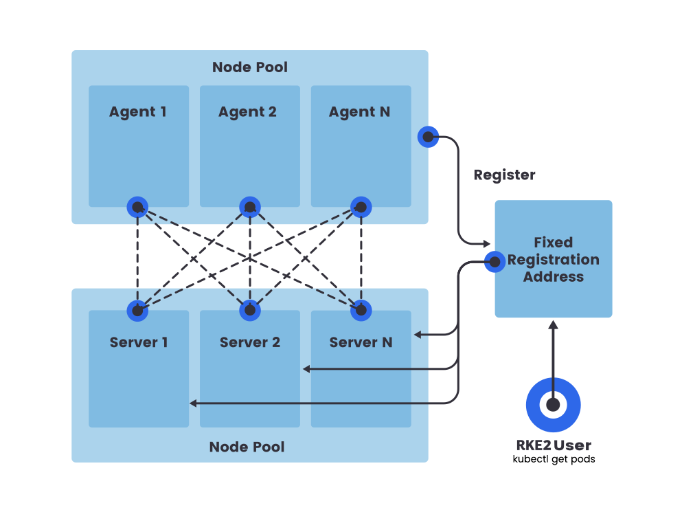

High Availability
This section describes how to install a high availability (HA) RKE2 cluster. An HA RKE2 cluster consists of:
-
A fixed registration address that is placed in front of server nodes to allow other nodes to register with the cluster.
-
An odd number (three recommended) of server nodes that will run etcd, the Kubernetes API, and other control plane services.
-
Zero or more agent nodes that are designated to run your apps and services.
Why An Odd Number Of Server Nodes?
An etcd cluster must be comprised of an odd number of server nodes for etcd to maintain quorum. For a cluster with n servers, quorum is (n/2)+1. For any odd-sized cluster, adding one node will always increase the number of nodes necessary for quorum. Although adding a node to an odd-sized cluster appears better since there are more machines, the fault tolerance is worse. Exactly the same number of nodes can fail without losing quorum, but there are now more nodes that can fail.

Agents register through the fixed registration address. However, when RKE2 launches the kubelet and it must connect to the Kubernetes api-server, it does so through the rke2 agent process, which acts as a client-side load balancer.
Setting up an HA cluster requires the following steps:
-
Configure a fixed registration address
-
Launch the first server node
-
Join additional server nodes
-
Join agent nodes
1. Configure the Fixed Registration Address
Server nodes beyond the first one and all agent nodes need a URL to register against. This can be the IP or hostname of any of the server nodes, but in many cases those may change over time as nodes are created and destroyed. Therefore, you should have a stable endpoint in front of the server nodes.
This endpoint can be set up using any number approaches, such as:
-
A layer 4 (TCP) load balancer
-
Round-robin DNS
-
Virtual or elastic IP addresses
This endpoint can also be used for accessing the Kubernetes API. So you can, for example, modify your kubeconfig file to point to it instead of a specific node.
Note that the rke2 server process listens on port 9345 for new nodes to register. The Kubernetes API is served on port 6443, as normal. Configure your load balancer accordingly.
2. Launch the first server node
The first server node establishes the secret token that other server or agent nodes will register with when connecting to the cluster.
To specify your own pre-shared secret as the token, set the token argument on startup.
If you do not specify a pre-shared secret, RKE2 will generate one and place it at /var/lib/rancher/rke2/server/node-token.
To avoid certificate errors with the fixed registration address, you should launch the server with the tls-san parameter set. This option adds an additional hostname or IP as a Subject Alternative Name in the server’s TLS cert, and it can be specified as a list if you would like to access via both the IP and the hostname.
Example of RKE2 config file for first server:
|
The RKE2 config file needs to be created manually. You can do that by running |
token: my-shared-secret
tls-san:
- my-kubernetes-domain.com
- another-kubernetes-domain.com2a. Optional: Consider server node taints
By default, server nodes will be schedulable and thus your workloads can get launched on them. If you wish to have a dedicated control plane where no user workloads will run, you can use taints. The node-taint parameter will allow you to configure nodes with taints. Here is an example of adding a node taint to the configuration file:
node-taint:
- "CriticalAddonsOnly=true:NoExecute"|
The NGINX Ingress and Metrics Server addons will not be deployed when all nodes are tainted with |
3. Launch additional server nodes
Additional server nodes are launched much like the first, except that you must specify the server and token parameters so that they can successfully connect to the initial server node.
|
Matching Flags
It is important to match critical flags on your server nodes. For example, if you use the flag |
Example of RKE2 config file for additional server nodes:
server: https://my-kubernetes-domain.com:9345
token: my-shared-secret
tls-san:
- my-kubernetes-domain.com
- another-kubernetes-domain.comAs mentioned previously, you must have an odd number of server nodes in total.
If an etcd datastore is found on disk either because that node has either initialized or joined a cluster already, the argument --server is ignored.
4. Confirm cluster is functional
Once you’ve launched the rke2 server process on all server nodes, ensure that the cluster has come up properly with:
/var/lib/rancher/rke2/bin/kubectl get nodes \
--kubeconfig /etc/rancher/rke2/rke2.yamlYou should see your server nodes in the Ready state.
|
By default, any |
5. Optional: Join Agent Nodes
Because RKE2 server nodes are schedulable by default, the minimum number of nodes for an HA RKE2 server cluster is three server nodes and zero agent nodes. To add nodes designated to run your apps and services, join agent nodes to your cluster.
Joining agent nodes in an HA cluster is the same as joining agent nodes in a single server cluster. You just need to specify the URL the agent should register to and the token it should use.
server: https://my-kubernetes-domain.com:9345
token: my-shared-secret